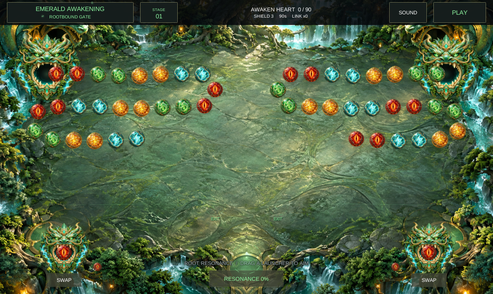

Dragon Orbs — Android closed alpha
Volunteer playtest by FJ.Developer. Help improve a marble shooter with two dragon launchers and four worlds, played in landscape on Android phones and tablets. This unreleased game is in closed-alpha testing.

Join the free playtest
You need a compatible Android device with Google Play, an eligible Google account and internet access to join and install. Google Play determines device and country availability.
- Join the Dragon Orbs playtesters Google Group.
- Using the same Google account, opt in to the Google Play closed test.
- Follow the Google Play installation link after opting in. No APK sideloading is required.
- Try a genuine short session of around 10 minutes. If willing, remain opted in for 14 consecutive days and return for short sessions when convenient. Participation is voluntary; there is no guarantee of a particular number of testers.
What to test and how to send feedback
Does aiming feel clear with both launchers? Where does difficulty become confusing? If you leave and reopen a saved round, is progress restored correctly? Report crashes, freezes or visual issues with your device model, Android version and steps to reproduce.
Send honest feedback to faraj.abdalla.jo@gmail.com. Positive feedback is not required. Never send passwords, identity tokens, payment details or other private account information. Do not clear app data during saved-round testing; progress is local and there is no cloud save.
Cost and participation
This is an unpaid volunteer test. No cash, gifts, paid passes or reciprocal testing are offered. No purchase or public rating/review is required. Five losses are free; wins do not consume attempts. All five attempts refill 24 hours after the fifth loss. Optional one-time paid passes exist in the game but are not required for this test.
Development disclosure
Dragon Orbs was developed with assistance from Codex and ChatGPT. We welcome feedback based on real play sessions.